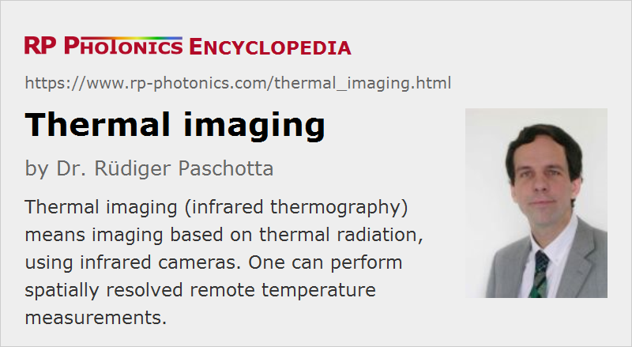

Thermal Imaging
Definition: imaging based on thermal radiation
Alternative term: infrared thermography
German: Thermographie
Categories: light detection and characterization, vision, displays and imaging, optical metrology, methods
How to cite the article; suggest additional literature
Author: Dr. Rüdiger Paschotta
Thermal imaging, also called infrared thermography, essentially means imaging based on thermal radiation. In some cases, one tries to obtain accurate temperature maps, i.e., to measure the temperatures of object surfaces. In other cases, qualitative information is sufficient – for example, for recognizing hot spots on some objects without measuring their temperatures.
Typically, thermal imaging is applied to objects with temperatures not deviating too far from room temperature – for example, between −50 °C and +100 °C. The thermal radiation emitted by such objects is mostly in the mid- to far-infrared spectral region; near-infrared emission, for example, would be too weak to be detected. Another important aspect is the transmissivity of air; imaging and particularly accurate temperature measurements are possible only with radiation which is largely transmitted by the atmosphere. Thermal imaging is therefore mostly done in the spectral regions between about 3 μm and 5 μm and between 8 μm and 12 μm, where the transmission of air is quite high, at least over moderate distances. At other wavelengths (outside those infrared atmospheric windows), there is strong absorption caused by water vapor and CO2, for example. When using such light, one would essentially see only the temperature distribution of air in front of the camera, but not the objects behind.
Infrared Cameras
There are various types of infrared cameras which can work with infrared light in the mentioned spectral regions of high atmospheric transmission. There is less choice of detectors for the long-wave infrared region around 10 μm, but that region is preferable for lower temperatures. As far as infrared photodetectors are used in the image sensor, they usually have to be cooled for operation at substantially reduced temperatures, e.g. 200 K or sometimes even far lower. However, there are also thermal detectors, e.g. based on microbolometers, which can be operated around room temperature, although with lower sensitivity.
For more details, see the article on infrared cameras.
Such cameras typically have an optical filter which transmits only radiation in the wavelength region of interest. Note, however, that such a filter will not only absorb unwanted radiation, but also emit substantial thermal radiation itself, unless it is also cooled.
Note that night vision devices are usually not suitable for thermography, although they do have some sensitivity for near-infrared light. In that spectral region, there is negligible thermal radiation.
Infrared Images
Images taken with infrared radiation can be displayed with a grayscale, where the appearance gets brighter at locations with more intense radiation. Alternatively, one often uses false colors. One often also displays a color scale, which allows one to associate colors with temperatures. See Figure 1 for an example.
The resolution of infrared images is often fairly low, because infrared sensors cannot be made with as many pixels as those of photo cameras, for example. Simple thermal cameras may provide a resolution of only 120 × 160 pixels, for example. Sometimes, one simultaneously records images with a conventional image sensor for visible light, showing much more detail, and both images can be compared.
Principles of Remote Temperature Measurements
In many cases, it is desirable not only to detect temperature differences qualitatively, but to accurately measure object temperatures. Compared with other temperature measurement methods, it is often advantageous that thermal imaging provides remote measurements (i.e., not requiring any contact with the objects) which can also be fairly quick.
Measurements on Black Bodies
We first consider the simplest possible situation, where thermal radiation from a black body is analyzed. This is a body with an emissivity of 1, which also necessarily exhibits complete absorption of incoming radiation and his zero transmissivity, i.e., it is completely opaque. Its radiosity (→ radiometry) is determined by Stefan–Boltzmann law:
with the Stefan–Boltzmann constant σ ≈ 5.6704 · 10−8 W m−2 K−4 and the absolute temperature T. In practice, one will utilize only a part of the complete emission spectrum, i.e., obtain a correspondingly weaker detected signal.
We also assume to have complete transmissivity of the atmosphere, eliminating any influences of that on the temperature measurement.
Interestingly, the optical power received by a single detector element of the camera does (for a fixed setting of the objective) not depend on the distance to the observed object. What counts is just the spectral radiance of the thermal radiation. This is essentially because a larger observation distance, for example, is compensated by the correspondingly larger object area from which radiation for a certain camera pixel is collected. As a consequence, it is not necessary to use the object distance in the temperature calculation.
However, a complication is that an infrared camera sensor will generally not simply provide some photocurrent which is proportional to the arriving radiance. For example, a microbolometer pixel exhibits an electrical resistance which depends on its temperature, and the difference of that temperature and the temperature of the substrate of the image sensor is what needs to be related to the incoming radiance. One will generally need to establish a relation between the sensor reading and the incoming radiance, and that relation may be somewhat different for the different pixels. Also, one will typically want to keep the substrate temperature constant, for example using a thermoelectric cooler.
Measurements on Objects with Reduced Emissivity
In practice, one usually has to deal with objects which have an emissivity smaller than 1. That has two different effects:
- The radiance of the thermal emission is multiplied with the emissivity, i.e., it becomes weaker.
- In addition, the absorption of incoming radiation becomes non-zero. Still assuming that we deal with completely opaque objects, there will be some degree of specular or diffuse reflectivity for radiation coming from the environment – typically, the thermal radiation emitted by other objects.
Such effects need to be compensated for making temperature measurements. The lower the emissivity of the imaged objects, the more difficult is generally that compensation. Fortunately, however, many building materials, for example, have a rather high emissivity around 0.9, which is very helpful for the energetic examination of buildings (see below). Difficulties arise for metallic part, as are often found in industrial settings.
A first challenge is to find out the emissivity of the imaged objects. For many materials, the emissivity in the wavelength region of interest is known and can be read from published tables. In other cases, it is unknown, and they are then essentially two different ways of dealing with that:
- One can measure the emissivity by comparison of their thermal emission with other materials at the same temperature, for example.
- One can cover parts of them with absorbing tapes, paints and the like, having a high and well-known emissivity and acquiring the same temperature by thermal conduction. The temperature measurements are then done on those specially prepared spots.
The second challenge is to estimate the intensity of ambient radiation, which is reflected on imaged objects and therefore partially gets into the thermal imaging camera. Frequently, there is essentially only thermal radiation around in the wavelength region of interest (i.e., no infrared lasers, for example), and the corresponding temperature is reasonably well known – for example, it is often close to the temperature of air in a closed room, which can be measured with an ordinary thermometer (possibly with a temperature sensor which is integrated into the camera). One can then easily calculate the level of ambient infrared radiation and use that for the calculation of object temperatures. That can be difficult for outdoor measurements, however; for example, one may have substantially different levels of thermal radiation from the ground and from the sky.
The mentioned compensations are often supported by software in thermal imaging devices. Alternatively, they may be applied on a computer to which the raw images are transferred. That may be more convenient, because one can then more easily adjust settings, e.g. the assumed emissivity values and ambient temperatures.
Measurements with Absorbing Atmosphere
Further complications come into play when the atmosphere is not completely transmissive for the thermal radiation. One then has some reduction of the thermal radiation getting from the objects to the camera, but at the same time an additional thermal radiation generated in the atmosphere. Those effects could in principle be compensated in the temperature calculation, but that may not be very practical – one reason being that the degree of atmospheric absorption may vary substantially within the relevant wavelength region. Besides, different objects in a scene may have different distances to the camera. Therefore, one will usually try to work under conditions where atmospheric absorption can be neglected; this means limited objects distances and the use of appropriate spectral regions.
Applications of Thermography
Inspection of Buildings
Thermography is often used for the inspection of buildings, mostly concerning their energetic qualities or deficiencies. Frequently, qualitative measurements can already be quite useful, for example for identifying locations with unexpected leaks for heat.
One approach is to take images from outside the building in the cold weather conditions. Locations with increased surface temperatures then indicate spots with increased heat losses (see Figure 1). Note, however, that absolute temperature measurements can be difficult, e.g. because of influences of ambient thermal radiation which can only be roughly estimated. Besides, it is difficult to quantify heat losses based on surface temperatures.
Some precautions should be taken to avoid errors. For example, it is preferable to avoid the influence of the sun by taking the images in the early morning; otherwise, one may misinterpret enhanced surface temperature caused by sunlight as heat losses. Also, the surfaces should be dry, avoiding cooling effects by evaporation. Further, all rooms should have been normally heated for at least several hours.
One can also take images inside the building to locate parts which are substantially below room temperature. Those locations also indicate leaks for heat, which also imply a risk that moisture condensates and forms the basis for fungi, with possibly adverse health effects. One may also locate poorly insulated pipes and previously overlooked electricity consumers.
Inspection of Machinery
Thermographic images of machinery during operation often reveals problems which cause elevated temperatures. For example, faulty electrical contacts may substantially heat up, and the same holds for moving parts experiencing increased friction.
One may also use thermal imaging for locating other defects of a wide range of parts. One sometimes uses active thermography, where some artificial heat source is applied. For example, one may apply an intense heat pulse by short-term irradiation with intense lamps and then monitor the evolution of temperatures with an infrared camera. That temperature evolution is often significantly modified e.g. by hidden cracks or other sub-surface features.
Fire Detection and Fire Fighting
Infrared imaging can be used to quickly and reliably identify fires based on their intense infrared radiation. Compared with using visible light, the use of infrared light is very favorable, because it is much less likely to produce false alarms, and because the infrared radiation can even penetrate thick smoke.
Thermal imaging cameras are also very useful for firefighters. They can adequately assess details of fires and also locate persons even through thick smoke.
Medical and Veterinary Applications
Measurements of skin temperatures can reveal various conditions. For example, thermal imaging cameras are used at airports to identify persons with fever, revealed by elevated skin temperatures. That is particularly of interest at times where the spread of dangerous infections must be limited. However, demographic measurements can also be used for doctors and veterinaries. For example, increased temperatures may indicate inflammations.
Military Applications
Thermal imaging is also important for various military applications. For example, one can easily locate persons and vehicles in a colder environment based on their thermal radiation. Anti-aircraft rockets are often guided with an infrared camera.
Suppliers
The RP Photonics Buyer's Guide contains 13 suppliers for thermal imaging cameras.
Questions and Comments from Users
Here you can submit questions and comments. As far as they get accepted by the author, they will appear above this paragraph together with the author’s answer. The author will decide on acceptance based on certain criteria. Essentially, the issue must be of sufficiently broad interest.
Please do not enter personal data here; we would otherwise delete it soon. (See also our privacy declaration.) If you wish to receive personal feedback or consultancy from the author, please contact him e.g. via e-mail.
By submitting the information, you give your consent to the potential publication of your inputs on our website according to our rules. (If you later retract your consent, we will delete those inputs.) As your inputs are first reviewed by the author, they may be published with some delay.
See also: thermal radiation, imaging, infrared cameras
and other articles in the categories light detection and characterization, vision, displays and imaging, optical metrology, methods
|  |
If you like this page, please share the link with your friends and colleagues, e.g. via social media:
These sharing buttons are implemented in a privacy-friendly way!